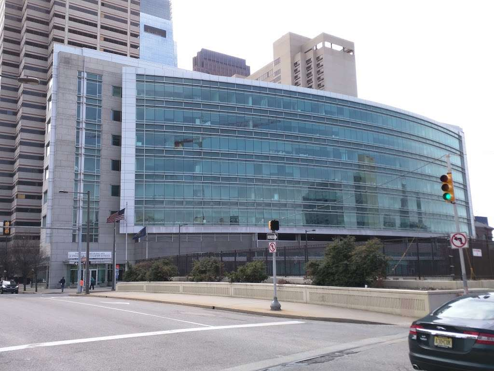
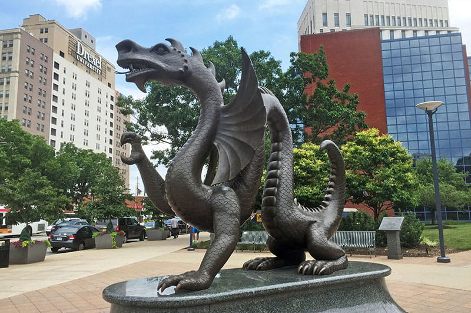

Education
HIGH SCHOOL
Between 2015 and 2019, I attended String Theory High School. A charter school in the City that was renowned for its arts programs on all fronts. They had vocal, instrumental, dance, classical and digital art, linguistics, and I even petitioned to get culinary arts added one year!
Besides the arts, they also had strong math and English classes. I took everything from Algebra 1 to Calculus 2 and we even had a Harvard graduate teaching our Analytics class!
Ontop of this, we were offered French as an elective which I took all 4 years and passed with flying colors!

DREXEL
In the Autumn of 2019, I started at Drexel as an undeclared art major. Out of everybody in my high school, only us lucky few out of my class were able to make it into Drexel.
It took two terms, but halfway through the Winter quarter of 2020, I decided that I wanted to major in Entertainment Arts Management (or just EAM for short). Being the person to put the "biz" in "showbiz" sounded interesting to me and I signed up! Along with my major, it comes with a built in minor in business.
One global pandemic later and I am almost ready to graduate in the Spring term of 2023. I learned a lot more than I thought I would in a business class and my courses took me to all kinds of feilds like animation, film production, website design, and more!
